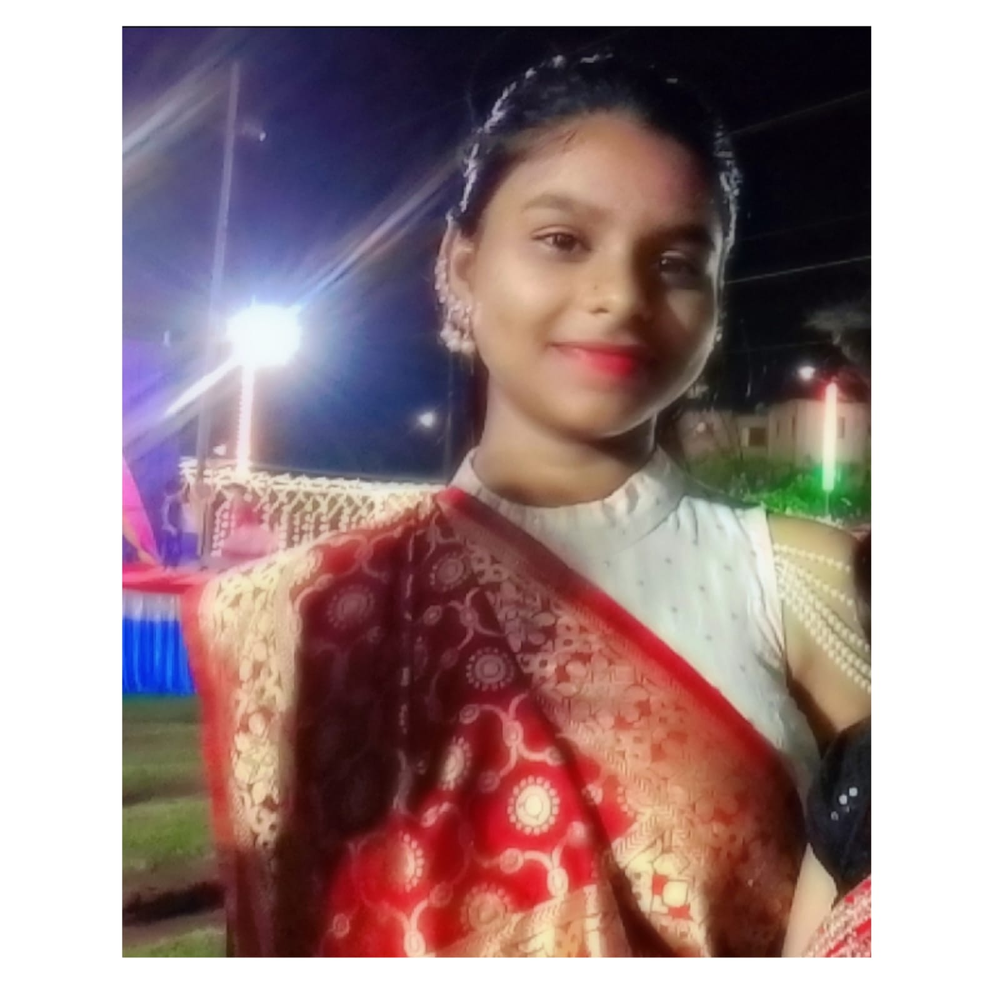

👩 Komal Kumari – My Profile 💖

📠Education: Completed Class 10th & 12th (Science - PCMC) from Jindal Adarsh Vidyalaya, Tornagallu.
📚 Currently: Pursuing Graduation in BCA from Kishkinda University, Bellary.
- 💃 Passionate dancer — loves expressing emotions through movement and rhythm.
- 🨠Skilled in painting — enjoys creating unique and imaginative artworks.
- 🧠Music lover — explores different genres and often finds inspiration through melodies.
- 🌟 Curious and always eager to learn new technologies and creative skills.
- 🤠Friendly and empathetic — values relationships and is always ready to support others.
- ✨ Bold and confident — not afraid to take initiative and explore new opportunities.
⬅ Go Back to Home Page